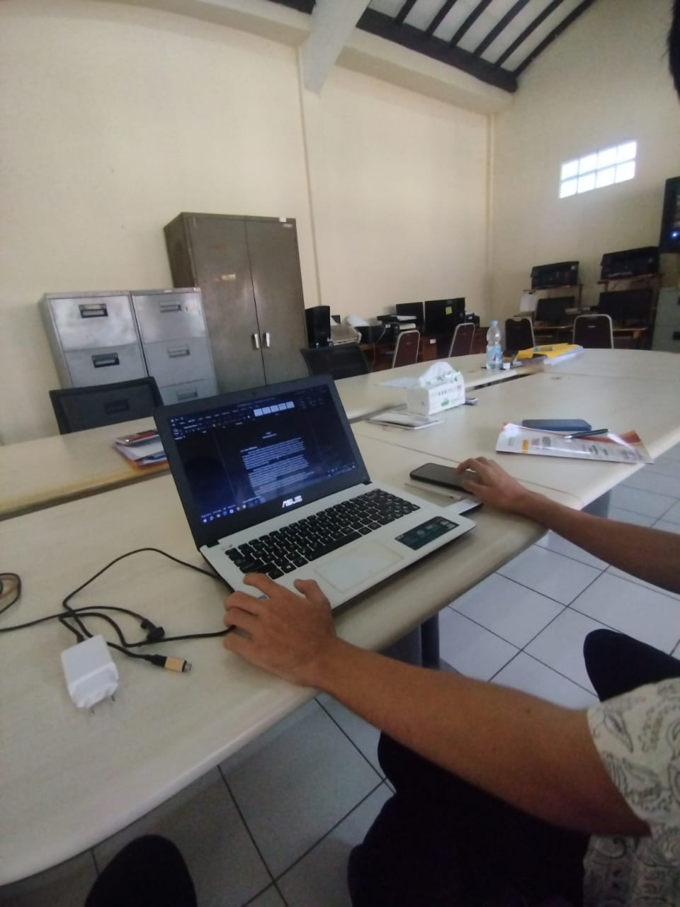

Ilustrasi perekapan data di Excel
Perekapan Data ke Dalam Excel
Pada bulan Agustus, saya fokus pada kegiatan perekapan data menggunakan Microsoft Excel. Kegiatan ini meliputi:
- Input data dari dokumen fisik ke format digital
- Pengorganisasian data dalam sheet yang terstruktur
- Penerapan formula Excel untuk perhitungan data
- Pembuatan grafik dan visualisasi data
Pencapaian
Selama bulan Agustus, saya berhasil merekap lebih dari 500 data point dan membuat sistem pencatatan yang efisien untuk departemen.
Keahlian yang Dipelajari
Microsoft Excel
Manajemen Data
Visualisasi Data